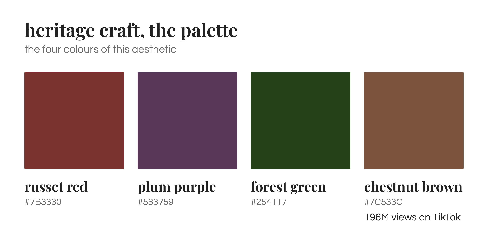
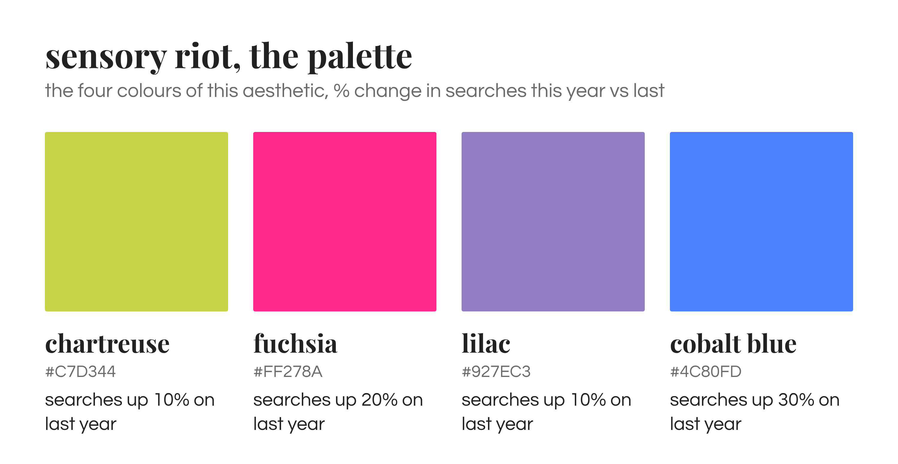
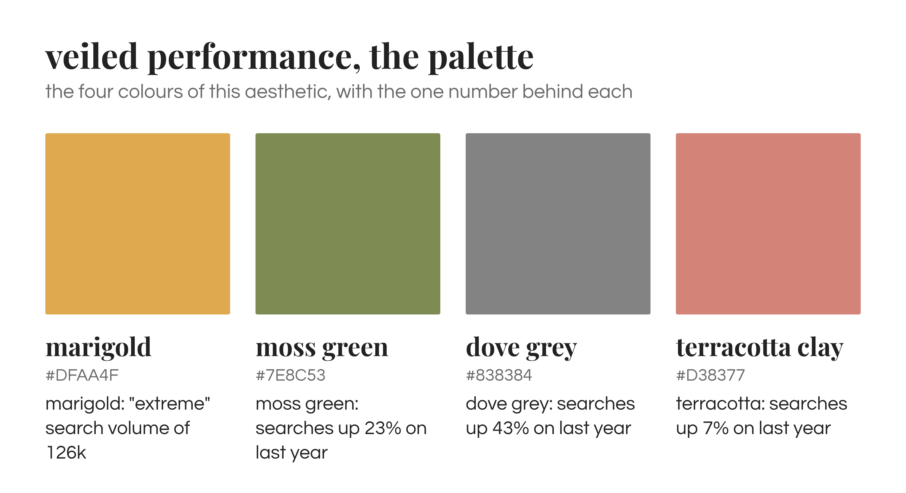
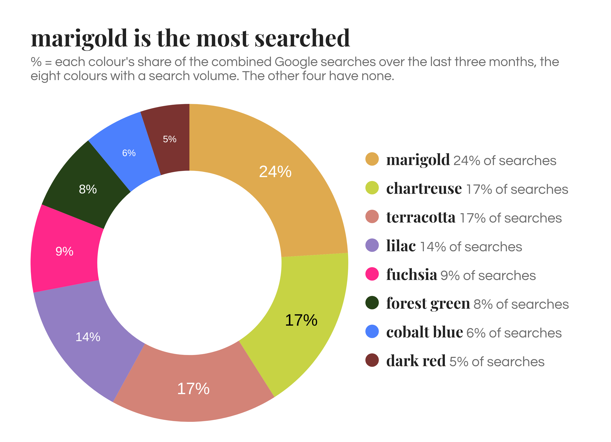
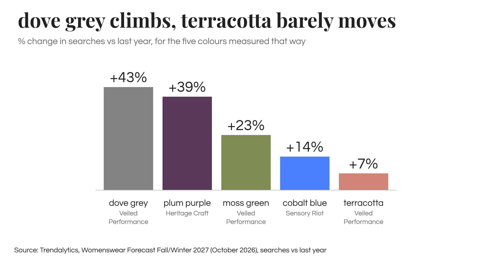
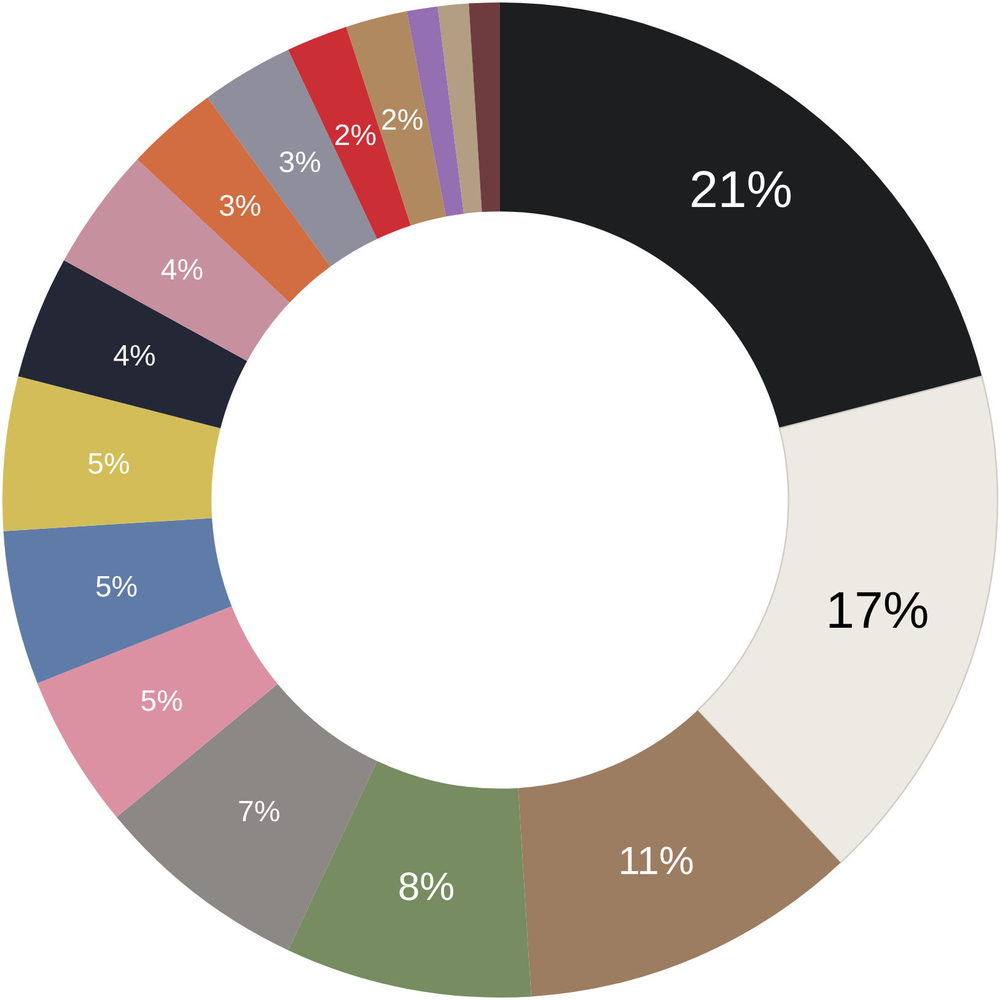
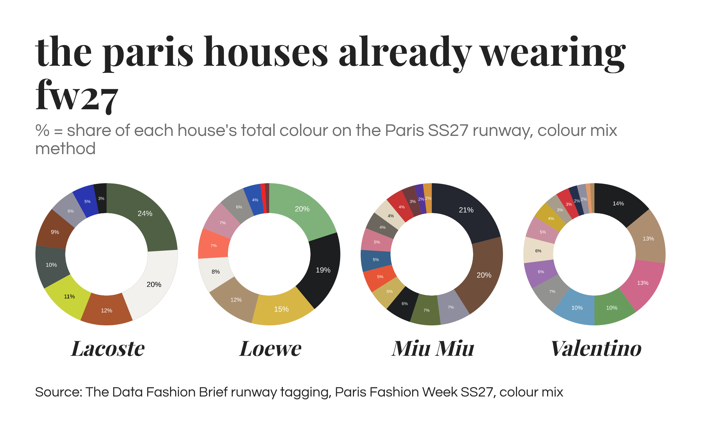

The ULTIMATE forecast FW 2027 is here!! I scraped the internet, social media, the press, and crunched the numbers to give you the twelve colours for next autumn, split into three moods. So this piece is about why those three moods exist at all, which of the twelve the forecasters agree on, which ones people are actually searching for, and which ones the Paris SS27 runway, the one I tagged myself, can already see.
Methodology, the short version
The twelve colours come from the Trendalytics Womenswear Forecast for Fall/Winter 2027, four for each of its three aesthetics, Heritage Craft, Sensory Riot and Veiled Performance. Each colour arrives with one number, and the numbers come in three different kinds, so I've turned them all into percentages a reader can actually compare: the colours with a search volume are shown as their share of the combined searches, the colours with a growth figure as % change on last year, and I've added my own Google Trends pulls where they fill a gap. Then I checked the twelve against two outside sources: the WGSN and Coloro key colours for the same season, and my own Paris SS27 colour tagging, 16 houses and 997 looks, where every look is split across up to three colours by how much of the outfit each covers. Full detail at the bottom.
The three palettes, and why they're called that
Heritage Craft: quiet luxury grows up, and for winter it comes in deep colour

Stealth wealth is evolving into heritage craft. Shoppers are moving from logos to natural fabrics, with cotton up 90% and cashmere up 80% in Google searches this year against last, because what people want is a timeless wardrobe of tried and true luxury, clothes that work as an enduring staple rather than a season's statement. My Paris SS27 tagging sees the foundation of it already: wool suiting was in 25% of all looks, the biggest material of the season. The craft side shows in jacquard jackets (up 61% in searches on last year), lace (4% of all Paris looks), shrunken blazers and peplum jackets (up 24% in Google searches over the last three months) and the equestrian tall boot look, with harness boots up 476% this year. Autumn leaves and riding boots, basically, and the palette is exactly that.
The colours, in my own Google searches: plum purple is the one moving, up 60% (and up 154% on TikTok), which makes it the safest bet of the four, with dark red and forest green both up 50% behind it and chestnut brown barely moving at 10%. The forecast's own numbers tell the same story from a different angle, plum up 39% on last year, while forest green and dark red are the two least searched of the five colours it gives a volume to, 14% and 9% of the combined searches. Brown is everywhere on TikTok and nowhere in search, which is the difference between a colour people watch and a colour people go looking for.
Sensory Riot: dressing in things you can actually feel

This is the maximalist palette, and the reasoning behind it is three things at once. Shoppers tired of generic AI imagery are turning to tactile, layered, clashing-print dressing that a machine can't replicate, years of quiet luxury have dissolved into corporate sameness, and effort is back, clothes that visibly took time to make. My data agrees on the direction: 31% of the Paris SS27 looks I tagged carried embellishment (ruffles, fringe, sequins, beading, embroidery, feathers or appliqué), at every one of the 16 houses, and the fringe skirt is the clearest signal, up 71% in searches on last year and the biggest mover among the items the forecast measured that way. Minimalism isn't over though, 56% of the Paris colour weight was still neutral, so the loud side grows while the quiet side stays.
The colours: lilac and fuchsia are the two most searched colours in the whole forecast after marigold, 25% and 21% of the combined searches, and the fuchsia end of pink is no surprise to anyone here, because I already told you pink is back, pink was in 8% of Paris looks and present at 81% of the shows I analysed, and blush pink searches are up 20% over the last three months. Cobalt blue is the quiet climber, up 14% on last year in the forecast and up 33% for blue over the last three months in my own pull, and it's crossing from fashion into beauty. Chartreuse is the other colour that only has TikTok views, watched rather than searched.
Veiled Performance: gorpcore grows up and brings an umbrella

The sporty, rain-ready palette, and the name is less poetic than it sounds. Gorpcore has matured past the sports-prep peak of 2026 into sleek utility, nylon, drawstrings, hoods, and unpredictable weather is pushing rain jackets and waterproof footwear into everyday wardrobes. On my Paris tagging it's still a one-house story, nylon and technical fabric were in 4% of all looks and 26% of Lacoste's, and PVC was Chloé alone, on six trench coats and capes. So the clothes are early, but the colours aren't.
The colours: marigold is the most searched colour in the entire forecast, 31% of the combined searches for the five colours that have a volume, and its neighbour amberglow is up 50% in Google searches over the last three months in my own pull. Dove grey is the fastest climber of the twelve, up 43% on last year, moss green is up 23%, and terracotta is up 7%. I'm sorry, but a colour whose searches grew 7% in a year is not a forecast, it's a colour that exists.
Same scale: which of the twelve are actually being searched?
Ok, ok… twelve colours, three moods, each with a number next to it, very convincing. But a "high" search volume and an "extreme" one turn out to be two numbers barely a third apart, and only five of the twelve have a search volume at all. So here are the colours that share a measure, on one scale and in percentages.
By share of searches: marigold first, the heritage colours last

Marigold takes 31% of the combined searches, lilac 25%, fuchsia 21%, and the two Heritage Craft colours sit at the bottom, forest green at 14% and dark red at 9%. Which means that of the four colours both forecasters agree on, the search data loves two (marigold and lilac) and shrugs at the other two (forest green and russet).
By search growth: dove grey climbs, terracotta barely moves

Dove grey is up 43% on last year, plum purple 39%, moss green 23%, cobalt blue 14% and terracotta 7%. Plum is the one I believe, because it's been building all year on this autumn's runways, which is where the press comes in. Chestnut brown and chartreuse have only TikTok views, so they sit outside both charts. Twelve colours, three different yardsticks, not one colour measured twice. That's not dishonest, it's how forecasts are built, but it's exactly why I don't call all twelve a trend.
What the Paris SS27 runway can already see

The forecast calls its runway references early indicators, so it's fair to check the twelve colours against the SS27 runway I tagged, with the caveat that spring and autumn palettes are different animals. Grouping the twelve into the families my data uses, brown and beige was 11% of the Paris palette (chestnut brown's family), green and olive 8% (forest and moss), grey 7% (dove grey), pink, blue and yellow 5% each (fuchsia, cobalt, marigold and chartreuse), orange and rust 3% (terracotta), red 2% (russet) and purple 1% (plum and lilac). So the only forecast colour Paris was already properly wearing is green, the biggest real colour of the season, and the Heritage Craft anchors, russet and plum, were close to absent, which doesn't make them wrong for autumn, it means the runway isn't where that signal is coming from yet. The fabric fairs are: Première Vision Paris built its Autumn/Winter 2027/28 season on deep purples, bordeaux and mineral neutrals (FashionUnited), which is the Heritage Craft palette almost exactly.
House by house, the Paris houses already wearing next autumn
This is my favourite bit, because the season average hides where the colour actually lives, and a few Paris houses were already in the FW27 palette without knowing it.
- Lacoste is the Veiled Performance house. Green is its biggest slice at 24% of its palette, mostly khaki and bottle green, orange and rust is 12% and literally tagged as terracotta, clay and rust, and yellow is 11%, mostly chartreuse. Three of the forecast's twelve colours in one collection, against a season average of 8%, 3% and 5%.
- Loewe owns marigold's family, yellow and gold at 15% of its palette (canary and lemon sorbet), three times the season average, and green at 20%, though Loewe's green is jade and pistachio, nothing like forest.
- Miu Miu is the chestnut brown house, brown and beige at 20% of its palette, tagged as chocolate, brown check and chestnut leather, against 11% for the season.
- Valentino did the Sensory Riot colours, pink at 13% of its palette and specifically fuchsia and cerise, plus lavender at 6% of its palette, which with Balmain's 8% is where almost all of Paris's purple came from.
- Chanel, Maison Margiela and Dior are the dove grey houses, 15%, 16% and 13% against 7% for the season.
- Russet red has no house. Red was 2% of Paris and Chanel and Lanvin gave it 7% each, scarlet and lacquer red, neither of them a russet. If the forecasters are right about russet, it's coming from nowhere on the spring runway.
